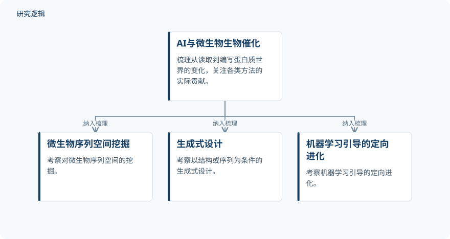

摘要解读
从预测到创造：人工智能驱动设计如何重塑微生物生物催化
From prediction to creation: How AI-driven design is reshaping microbial biocatalysis.
解读更新 2026-11-10 18:11 · 依据公开摘要整理，未核验全文细节
AI能够设计出具有功能的蛋白质，但这是否意味着它已成为有用的生物催化剂？本文围绕微生物酶工程，梳理从序列挖掘到生成式设计的变化，并提出更贴近应用需求的评价框架。
文章目录
天然酶空间之外，微生物提供了什么
酶工程长期依赖理性设计和定向进化，但摘要指出，这两类方法仍受天然酶空间约束。微生物世界中大量尚未得到表征的序列，使这一限制尤为突出：潜在资源丰富，并不等于其功能已经被理解或可以直接利用。
准确结构预测的出现推动了超越蛋白质折叠预测的AI方法。作者强调，这些工具并不局限于特定生物；微生物之所以成为重要试验场，是因为它既提供尚未充分表征的序列空间，也提供表达宿主。
沿序列挖掘、生成设计与定向进化展开梳理
这是一篇围绕领域进展展开讨论的综述，摘要没有呈现单项实验的操作流程。作者考察微生物序列空间挖掘、以结构或序列为条件的生成式设计，以及机器学习引导的定向进化，追问这些环节分别为微生物生物催化带来了什么。
这条讨论主线被概括为从“读取”蛋白质世界走向“编写”蛋白质世界。它强调研究能力的转变，但不能据此认定所有方法都已摆脱天然酶空间，也不能把这些讨论环节视为已经验证的统一实验流水线。
依据摘要整理的综述议题示意


展示作者考察的研究环节及共同关注的问题；这是摘要整理示意，不是论文原图，也不表示经过验证的实验流水线。
下载 SVG图示关系说明
实线表示相邻阶段的信息流，虚线表示跨阶段联系或反馈。
AI与微生物生物催化 → 微生物序列空间挖掘：纳入梳理；AI与微生物生物催化 → 生成式设计：纳入梳理；AI与微生物生物催化 → 机器学习引导的定向进化：纳入梳理
从“具有功能”转向“适合生物催化”
摘要明确提出的核心产出，是针对已发表主张难以相互比较的问题，建立分层评价框架：催化、选择性、可生产性和工艺适配性。其目的不是只判断蛋白质是否具有功能，而是判断AI设计的酶是否称得上有用的生物催化剂。
因此，本文值得关注的不是某项性能提升数字，而是评价问题的改变：设计成功不能仅由功能性概括，还需要放到生产与工艺需求中判断。摘要未列出具体案例的结果，因而目前无法据此比较不同AI方法的实际表现。
摘要尚不足以判断方法优势与验证边界
本次解读仅依据完整摘要。摘要未报告纳入研究的数量、酶与宿主的覆盖范围、案例筛选方式、比较基线或实验验证条件，也未说明分层框架的具体判定标准。因此，尚不能判断各类方法的优势有多普遍，或框架经过何种验证；这些信息未见于摘要，不代表论文没有讨论。
阅读启发：生成能力与应用价值应分开判断
阅读启发：关注生成式设计时，可以先区分“生成了什么”与“证实了什么”。进一步阅读本文时，值得追问作者如何界定催化、选择性、可生产性和工艺适配性，以及不同案例的证据能否支持相互比较，而不是仅凭设计具有功能就推断其应用成熟度。
以上为本站阅读启发与建议，不是论文已验证的结论。